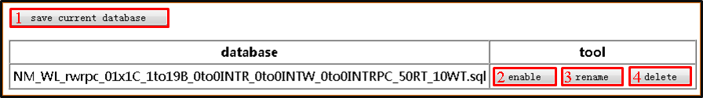
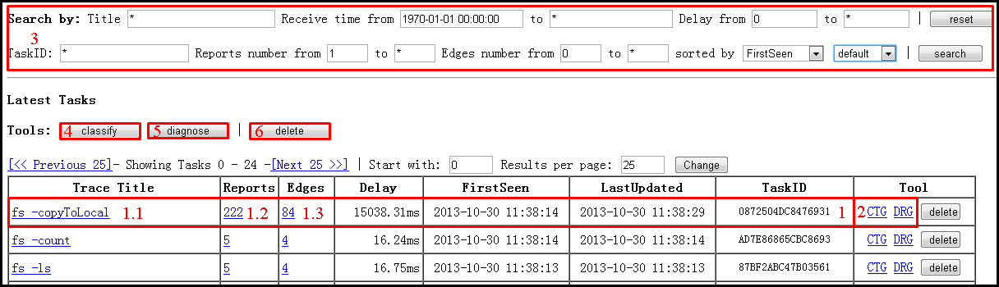
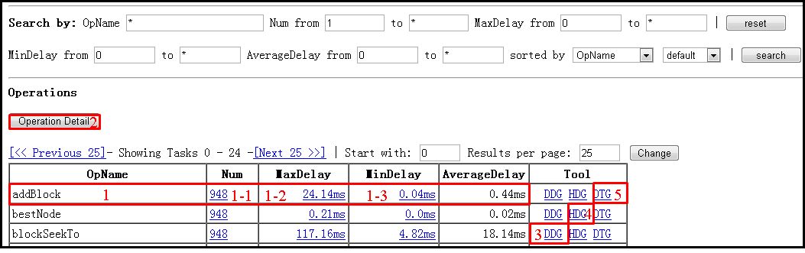

Welcome to MTracer-Viz! (Try it)
E-mail: jwzhou@nudt.edu.cn
Overview
MTracer-Viz is a web-based visualization tool for MTracer, displaying the data collected by MTracer from different aspects. MTracer-Viz supports different queries, such as the operations executed in a certain node and the traces generated during last hour. Some kinds of deeper data analyses are also integrated, such as trace classification and performance problem diagnosis. We implemented MTracer-Viz both for windows and linux. A version of MTracer-Viz is also deployed on web (here) for visualizing TraceBench.
publications
Refer to MTracer and TraceBench.
Getting Start
To use MTracer-Viz, some software need be installed firstly. We suggest to employ the recommended version of each software, to void unexpected problems.
| Software | Recommended Version | |
|---|---|---|
| 1 | JDK | 1.6.0_10-rc2(6u10) |
| 2 | MySQL | 5.1.27 |
| 3 | Graphviz | 2.26.3 |
| 4 | Tomcat | 6.0.35 |
Following is the steps of deploying MTracer-Viz on Windows and Linux:
For Windows
For Linux
Note that:
Functions
1. Database files

**Location**: Click the link "Databases" on the top of homepage, or input "http://localhost:8080/database_list.jsp".
Description: Manage database files:
1) save current database: Dump data from MySQL to a .sql file.
2) enable: Load data from the .sql file to MySQL.
3) rename: Rename the name of the .sql file.
4) delete: Delete the .sql file.
2. Traces

Location: Homepage, or input "http://localhost:8080/index.jsp".
Description: Display, manage and analyse traces of MySQL:
1) trace information: List all trace in MySQL with trace name, contained events/edges, handling time, first/last event arrival time on MTracer server, and trace ID. The link 1.1 selects traces with the same name, and link 1.2/1.3 shows the details of all contained events/edges. (event/edge: refer to MTracer)
2) CTG/DRG: Show the trace tree of the corresponding trace in the form of graph/text.
3) search zone: Query traces with various conditions.
4) classify: Classify traces with the same title, according to the topologies of trace tree. So, the process is : select (traces with the same title via search zone) -> classify.
5) diagnose: Diagnose performance problems, based on PCA, among a trace set with the same title and with the same topology. So, the process is: select (traces with the same title) -> classify -> diagnose.
6) delete: Delete all the selected traces.
3. Operations

Location: Click the link "Operations" on the top of homepage, or input "http://localhost:8080/op_index.jsp".
Description: Operations can be understood as functions or the event names.
1) operation information: List all the kinds of operations, with the name, amount of appearing in MySQL, max/min/average executing time. Link 1-1 lists the details of all the operations, and link 1-2/1-3 lists the details of all the operations with the max/min executing time.
2) Operation Detail: Show the details of all selected operations and the details of the belonged trace.
3) DDG: Show the distribution of executing time of an operation kind.
4) HDG: Show the distribution of belonged host of an operation kind.
5) DTG: Show the trend of executing time of an operation kind.